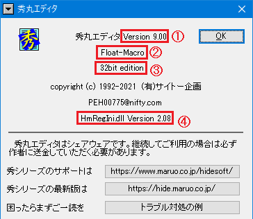

秀丸エディタは「秀まるおのホームページ」で入手可能です。
秀丸エディタの最新版は次の通りです。トラブルが発生するようであれば、まず最新版を導入することをお奨めします。
| 種類 | Version | アーカイブ名(日本語/英語 共通版) |
|---|---|---|
| 32bit版 | 9.37 | hm937_signed.exe |
| 64bit版 | 9.37 | hm937_x64_signed.exe |
秀丸エディタの対応OSは Windows XP、Vista、7、8、8.1、10、11 になります。
(Windows 98、Me、NT4.0、2000 対応版は Ver.8.99.4まで)
Windows XP以降の場合、32bitおよび64bit OS に対応。
なるべく新しいOSでの使用を推奨します。
2024/10/09現在、Microsoft の サポート対象なのは、Windows10 Version 22H2、Windows 11 Version 23H2 です。
(Windows10、11以外は、すでにメインストリームサポートは終了しています)
Windowsのサポートに期間に関しては、ライフサイクルに関する FAQ - Windowsと製品およびサービスのライフサイクル情報の検索を参照してください(Windows 10 Home and Pro または Windows 11 Home and Pro で検索すればいいでしょう)。
以前あった Windows NT(Alpha)、Windows NT(PowerPC)、Windows 3.1用の秀丸エディタはすでに更新されていません。 (Alpha、PowerPC版は古いバージョンがダウンロード可能ですが、3.1用はダウンロード出来ません)
現在(2024/10/09)、秀丸エディタは以下のバージョンが公開されています
日本語/英語 共通版 (Ver.8.92 から表示言語の切り替えが可能になってます。英語版はVer.8.93aが最後)
表示言語の切替に関しては「第II部〜知っていると便利な秀丸の機能」−「表示言語の切替」を参照。
浮動小数点版
さらに各バージョンには 32bit版 64bit版があります。 64bit OS では秀丸エディタの 32bit版 64bit版のどちらでも使用可能です。
浮動小数点版とは、マクロで使用する数値で小数点を扱えるようになるバージョンです。 (通常版は整数のみで小数点以下は扱えない)
Windows10(Version 1607以降)用ストアアプリ版も公開されています。
ストアアプリ版は既存の秀丸エディタ(デスクトップ版)とは別のアプリケーション扱いで、ライセンスや設定も別になります。
ストアアプリ版は 32bit版のみで 64bit版はありません。64bit OS でも32bit版を使うことになります。また、「浮動小数点版」はありません。
詳細は秀まるおのホームページの秀丸エディタ(ストアアプリ版) を参照してください。
ストアアプリ版は、Windowsの自動更新が有効なら自動的にアップデートされます。
使用している秀丸エディタの種類やバージョン bit数の確認方法(デスクトップ版)
メニューの「その他 - 秀丸エディタについて」を選ぶとバージョン情報ダイアログが表示されます。

表示されている内容は以下になります。
使用している秀丸エディタより新しいバージョンが公開されているか確認する方法(デスクトップ版)
使用中の秀丸エディタより新しいバージョンが公開されているかどうかは、メニューの「その他 - 最新バージョンの確認」を実行することで確認できます。